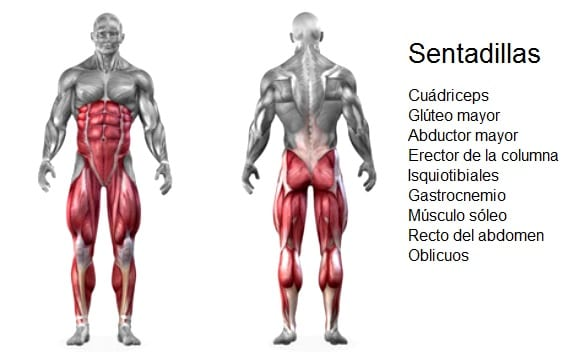

el primer dia de la rutina se suele hacer pecho y triceps, el motivo de esta combinacion de musculos es que para ejercitar ambos se suele utilizar una fuerza de empuje. les dejamos aqui una rutina del mismo

el segundo dia se hace espalda biceps, la combinacion es por un motivo similar al anterior, pero en este caso se realiza una fuerza de jalon, les dejamos un video de una rutina optima para este dia

el tercer dia se realiza exclusivamente pierna, esto es porque es un musculo compuesto muy grande, que lleva tiempo ejercitarlo. suele ser el dia mas cansador y mas largo, es comun que al terminar este entrenamiento te sientas demasiado agotado. les dejamos un video del mismo

el cuarto dia se suele enfocar en el hombro principalmetne pero tambien se pueden realizar algunos ejercicios de bicep y triceps para complementar un buen entrenamiento